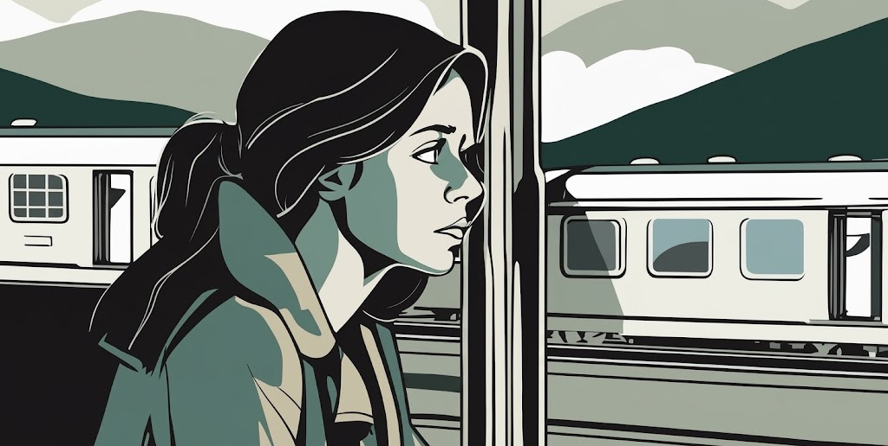

Once Upon a Page
Once Upon a Page

The Same Train

On Friday morning, July 5, 2013, Rachel rides the commuter train between London and Ashbury. She notices a pile of clothes left discarded near the track. In the evening Rachel is back on the train, sipping gin and tonic. She remembers her first-ever holiday with Tom and the things they used to do on the weekends. Thinking of the empty weekend ahead, she drinks more.
On Monday morning, July 8, 2013, Rachel is back on the train. From her usual spot she has a good view of trackside house number 15. Jess, the woman living there, often has her morning coffee out on the terrace. Rachel enjoys imagining her life. Back on the train that evening, Rachel is drinking wine.
On Tuesday morning, Jess is standing on the terrace. As the train moves on, Rachel refuses to look at the house up the street: 23 Blenheim Road is the house she used to share with Tom. Now he lives there with Anna and their baby. Rachel lives in the spare bedroom of a duplex belonging to Cathy, a casual college friend who offered temporary lodging after Rachel's divorce.
On Wednesday morning Rachel cannot see Jess or her husband Jason. She imagines that Jason, a doctor, is away on business, and that Jess, a painter, is upstairs painting. Yet she admits that she doesn't know their professions; in fact, she doesn't even know their names. She imagines them to be what she and Tom used to be.
As she passes by her former house on Thursday morning, she remembers that when she was drunk the night before, she called Tom and told him she still loves him. Relatively speaking, this isn't as bad as the many other things she's done under the influence, like swinging at Tom with a golf club during a fight and damaging a wall or being sent home from work because she was drunk. That evening on the train she gets a call from Tom, and he tells her that she needs to stop calling him and needs to go to an AA meeting instead.